Before
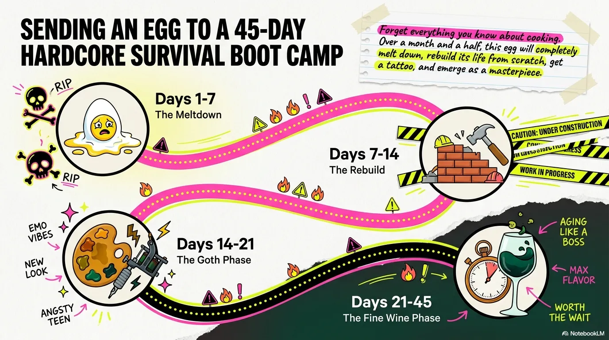
Start with a normal duck egg.
Inside the shell: clear egg white, soft yolk, familiar proteins and fats. The outside looks ordinary. The curing mixture is what changes the rules.
Visual Timeline
Century egg is not a dare food. It is a slow transformation. This page follows the egg as alkaline curing breaks down the old structure and builds a new one.
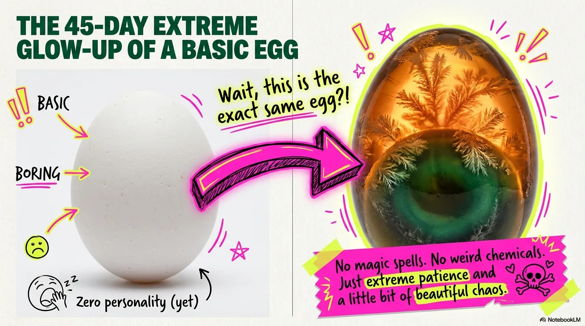

Inside the shell: clear egg white, soft yolk, familiar proteins and fats. The outside looks ordinary. The curing mixture is what changes the rules.
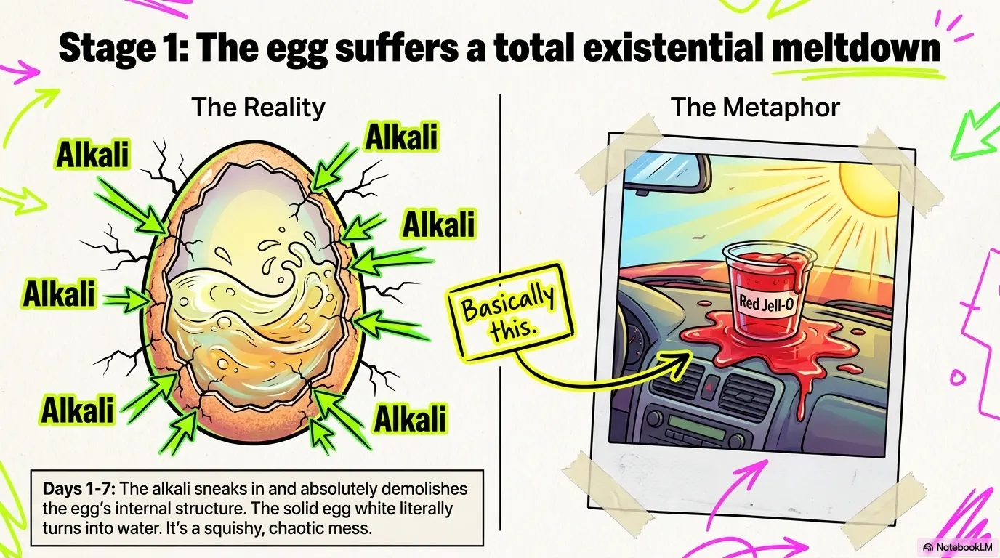
Hydroxide ions move through microscopic pores. The egg white loses its familiar thickness as proteins begin to unfold and separate.
Translation: the egg is being preserved and rebuilt, not spoiled.
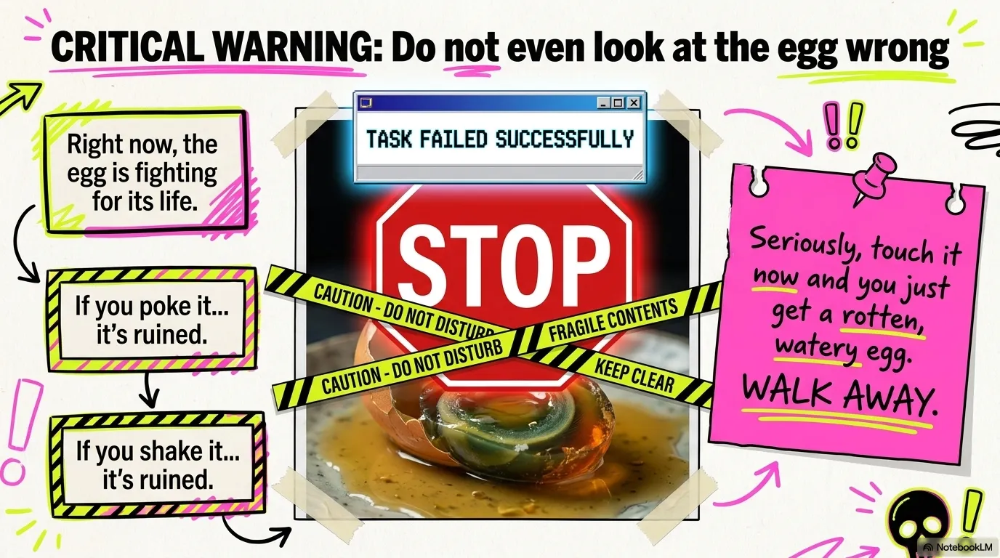
Unfolded proteins reconnect into a new network that traps water. This is why the finished egg white looks like amber jelly instead of cooked egg.
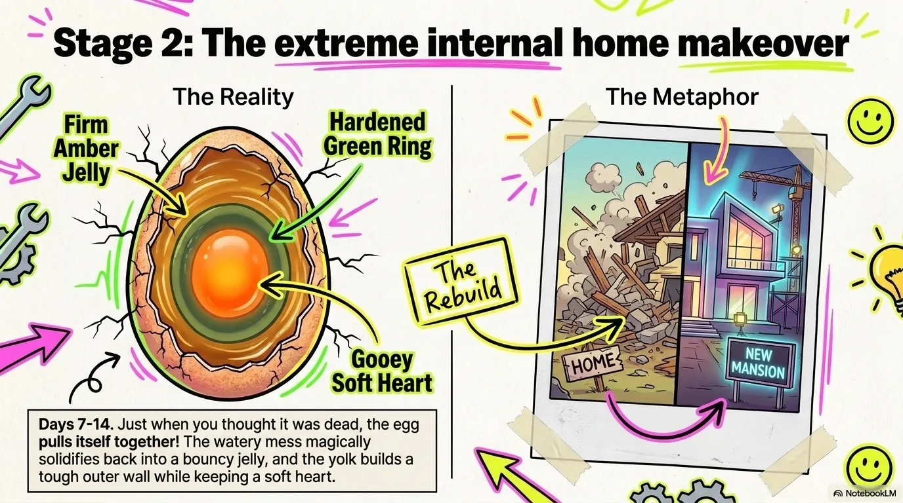
Slow browning reactions build amber, brown, and dark green tones. The yolk becomes creamy and salty, while the white becomes clearer and firmer.
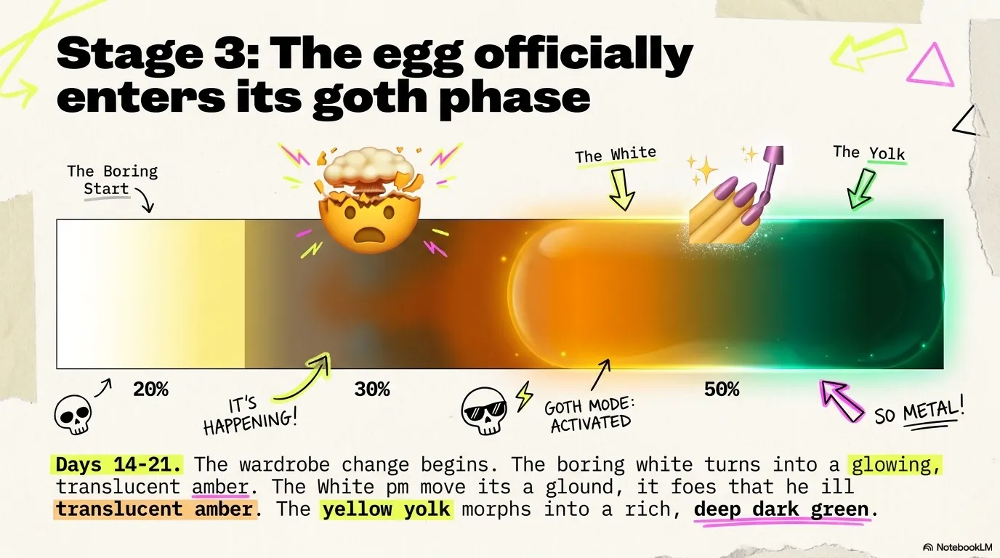
The famous pine flowers are tiny crystalline patterns formed inside the gel. They are one reason a good century egg can look weirdly beautiful instead of just weird.
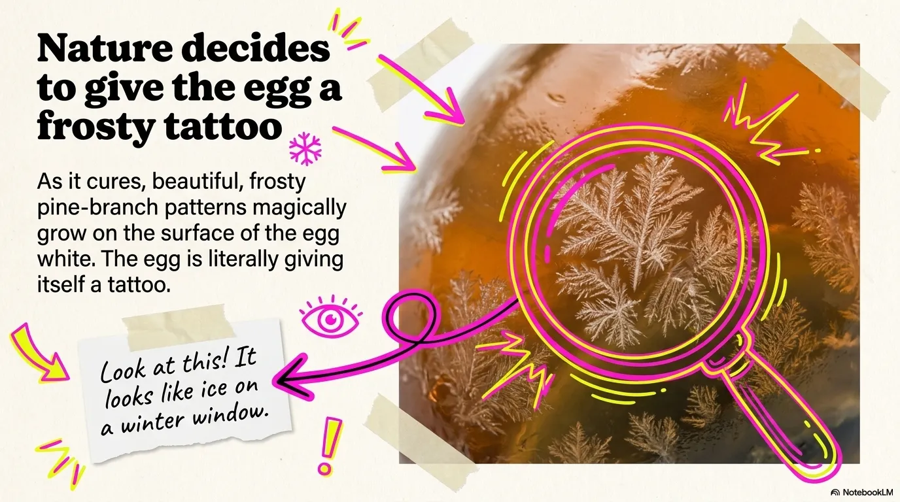
The structure stabilizes. The harsh alkaline smell fades. The yolk settles into a rich, savory center that fans call tangxin when it stays slightly molten.
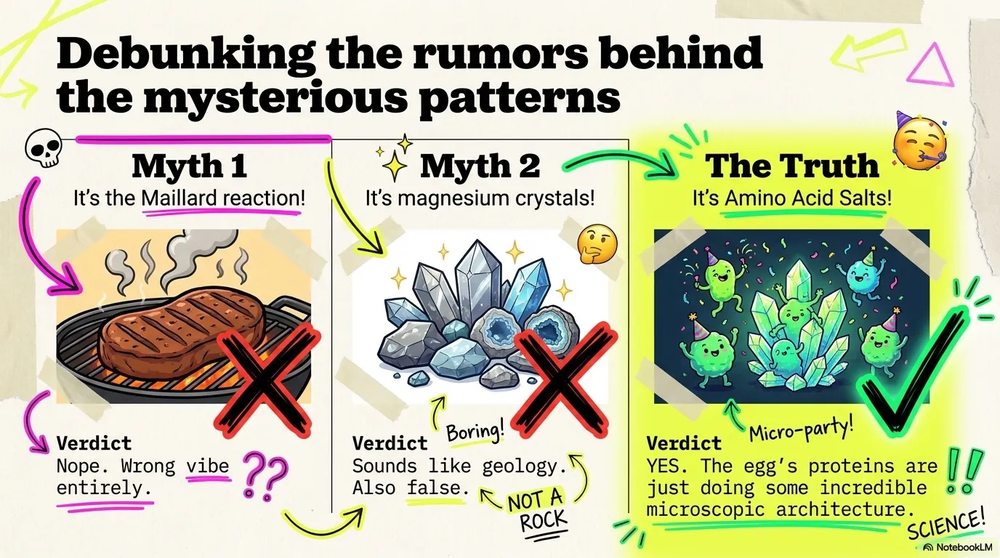
Amber outer gel. Dark yolk ring. Softer inner yolk. Creamy core. The whole point is contrast: cool, springy, rich, salty, and strange in the best way.
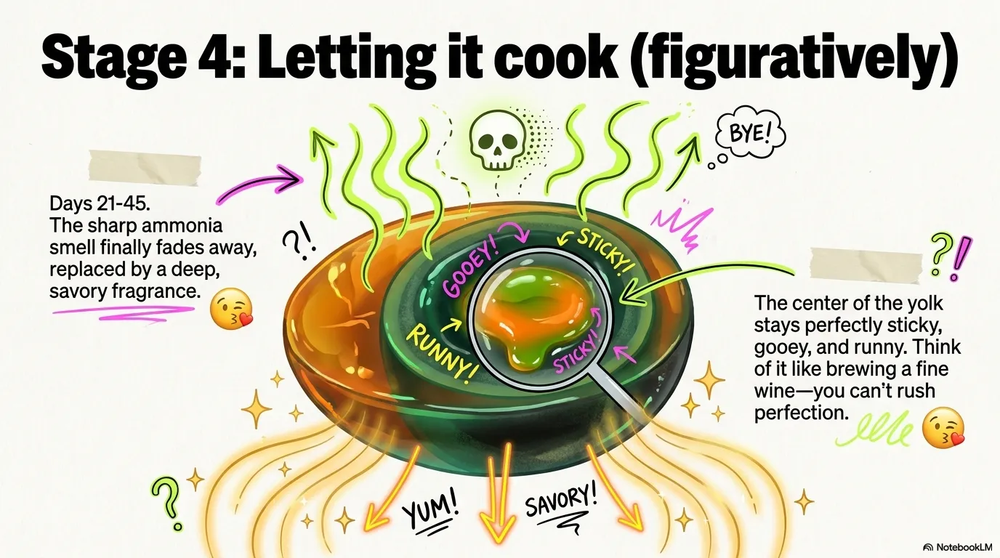
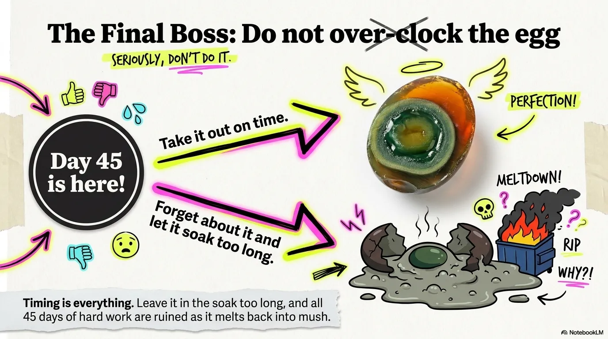
The easiest comparison is a chilled egg jelly with a rich, aged, savory yolk. It is salty, mineral, and umami-heavy. Pair it with tofu, congee, ginger, vinegar, or chili oil and it suddenly makes sense.
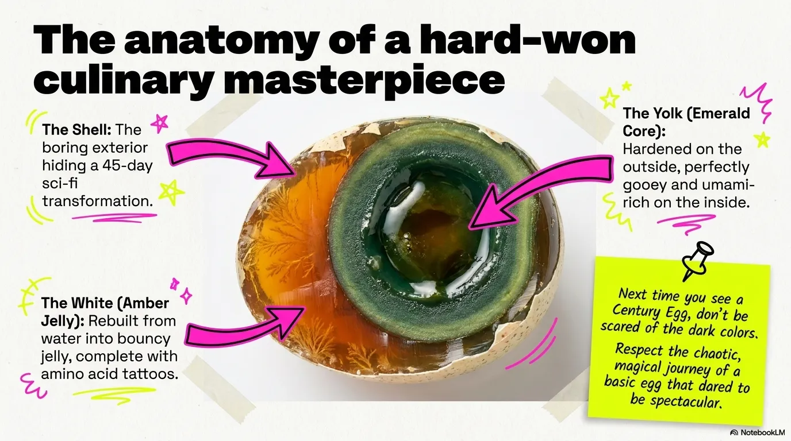
That is the trick: a simple egg becomes unfamiliar enough to scare people, but the process is controlled, repeatable, and delicious when served the right way.
Read the full science